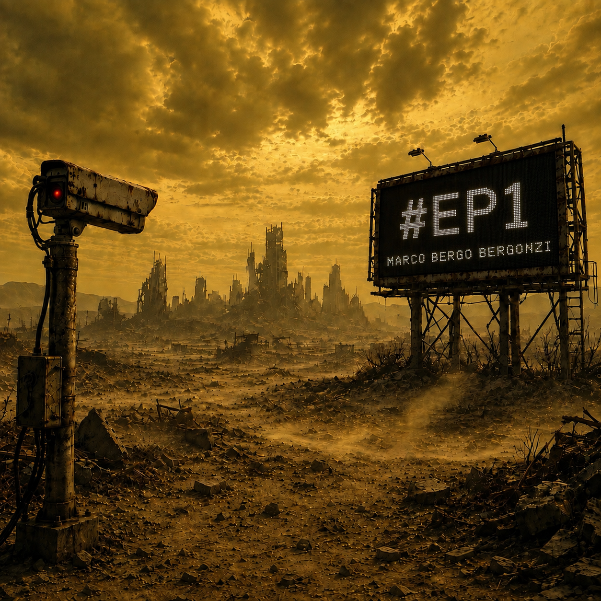

#EP1
PUBBLICATO
FASE STORICA - i miti e le leggende

LE CANZONI
LA BESTIA TRIONFANTE
Marco Bergo Bergonzi feat. Katia Antonioli
TESTO:
Tremate più voi a emettere sentenza che io che sto qui ad ascoltarla resto fedele, fedele a me stesso io scelgo la morte alla biura, la condanna alla cura da quando non siamo più dei noi non siamo più noi, solo anime vuote da quando non siamo più dei noi non siamo più noi, è la bestia trionfante è la bestia trionfante io, nemico di ogni fede, nemico di ogni legge nemico di me stesso, io brucio voi che restate potenti e saccenti che scrivete le leggi e giudicate la genti voi che pensate di fare la storia per la storia e per me voi non siete niente voi non siete niente voi non siete niente voi non siete niente tremate più voi ad emettere sentenza che io che sto qui ad ascoltarla quando un'idea si trasforma in materia voi potete bruciarla, ma mai cancellarla finiti gli eroici furori non resta nient'altro che uomini soli finiti gli eroici furori non resta nient'altro che schiavi e padroni io, anarchico e credente, poeta e dissidente amante della vita io brucio voi che restate potenti e arroganti vi sentite immortali, ma siete solo dei vermi dal fango venite, nel fango sguazzate e nel fango ritornerete ritornerete, voi ritornerete, ritornerete ma quando il potere si illude di avere già vinto improvvisamente, inaspettatamente la cultura ritornerà per schiacciare la testa, alla bestia trionfante.
↑ torna alle canzoniA.C. TRIBUTO AD ALBERT CARACO
Marco Bergo Bergonzi
TESTO:
non ho scelto io di venire al mondo ma adesso che ci sono, dico quello che penso sono un'infelice e non mi vergogno sono di razza eletta, di razza dannata troppo grande per essere capita sono l'erezione di un condannato all'impiccagione vergine suicida, esegeta del caos l'ultimo profeta di un mondo alla deriva iconoclasta di quello che resta la mia sola compagnia è lo schifo che provo per l'umanità intera e per la sua follia ma che arrivi in fretta, la fine che le spetta (la fine che mi aspetta) hei man, pensi che basti la tua volontà, per fermare la corsa un'altra estinzione, cosa vuoi che sia sarà la quinta o la sesta apocalisse vuol dire svelare la partenza è la fine la rivelazione di una nuova realtà di un mondo migliore (senza gli uomini?) la mia dannazione è di vedere bene ciò che c'è davvero dentro al cuore degli uomini la grazia e l'orrore che si fondono insieme nello stesso identico, fottuto gene no, non esiste redenzione l'auto distruzione è soltanto il sistema che corregge un errore solo, sono solo e lo sono sempre stato e lo sarò per sempre, fino all'ultimo istante circondato da imbecilli, governato da idioti canto la mia ode a chi può ancora sentire ai nichilisti, ai sodomiti, agli anarchici, ai falliti tolleranza zero mi dissolvo in silenzio, io non sono nessuno madre gloriosa, tutto comincia e finisce con te aspettami, arrivo che non posso lasciare il signor padre da solo non è questione di quando o di come la morte non è nient'altro che un velo pietoso da stendere adesso sulla fine di un uomo
↑ torna alle canzoniCUORE DI TENEBRA
Marco Bergo Bergonzi
TESTO:
giù nelle profondità dove nessuno osa andare a vedere tremano i cuori nella notte scura ulula il vento in mezzo alle tenebre ma è un mare profondo è un mare tempestoso che cambia ma quando cambia davvero lo fa, se lo fa soltanto in superficie giù nell'abisso invece non arriva mai la luce perdonami padre perchè ho molto peccato e non so quello che faccio perdonami padre perchè adesso che lo so, lo faccio lo stesso Giuda, io sono l'iscariota io sono la profezia che si auto avvera ed ho tradito me stesso e venduto il mio migliore amico ma se mi chiedo io non avessi agito adesso voi buoni, ma come fareste a sbagliare, pentirvi e poi sbagliare di nuovo pago io e pago per tutti pago io, che sono il solo rimasto a cui è stato negato l'accesso al libero arbitrio lascia che sia la mia notte più lunga padre, portami via con te mi lancio nel vuoto e accetto il mio destino, in fondo all'inferno non giudicate non condannate o avrete sempre e per sempre paura e bisogno di me
↑ torna alle canzoni
Tra musica, immagini e
parole, questo è il mondo di
Marco Bergo Bergonzi.
Marco Bergonzi - entropia1966@gmail.com